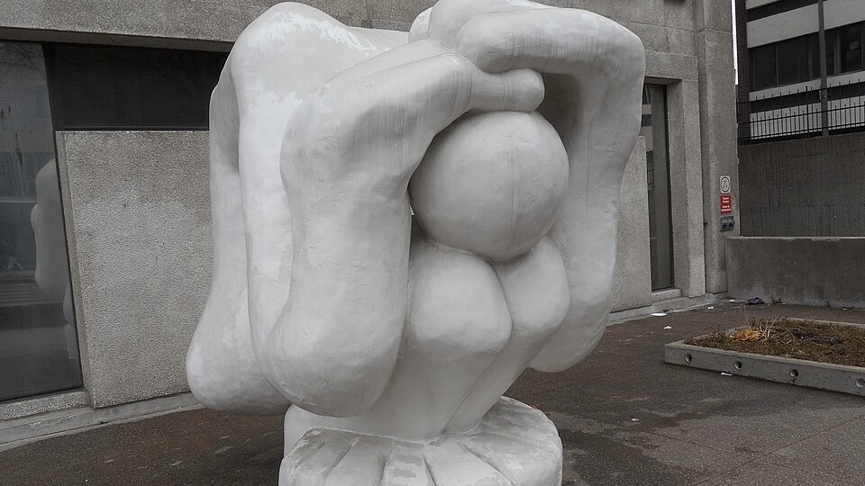

CV
Currently : Candidat·e au doctorat en action collective et environnement
at the Institut national de la recherche scientifique (INRS), Montréal, Canada.

Currently : Candidat·e au doctorat en action collective et environnement
at the Institut national de la recherche scientifique (INRS), Montréal, Canada.